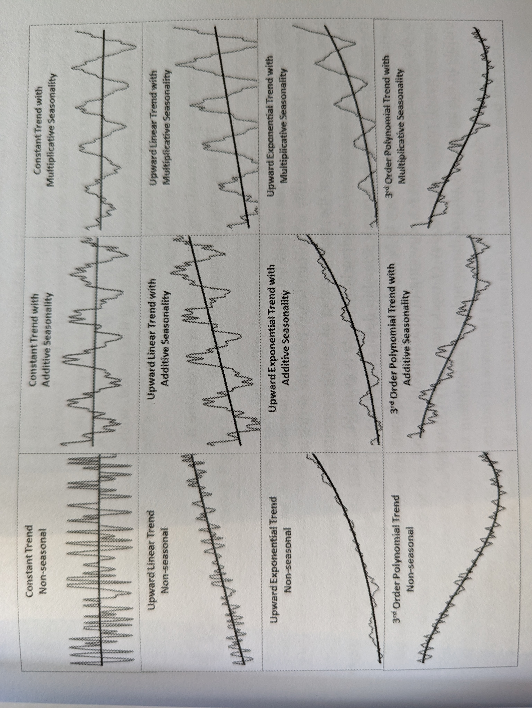

Time series can be thought of as consisting of 4 components.
Level: the average values of the series
Trend: The underlying change in level over time
Seasonality: Short term cycles in data
Noise: The random variation within the data
The goal of most forecasting is to separate the components out and use noise to predict accuracy.
There are two types of models that combine components differntly. Additive and multiplicative. The idea is quite simple. An additive time series could be thought of as:
\[y_1 = level + trend + seasonality + noise\]
while multiplicative:
\[y_1 = level * trend * seasonality * noise\]
This image shamelessly copied from Practical Time Series Forecasting with R. The figure in the book is annotated as giving credit to Dr. Jim Flowers of Boise State, but link rot has meant I cannot find the source. Forgive me.

Time Series in R
The time series class
R has the ts() function which creates objects of class time series from the base stats package, which is very useful for many forecasting methods. To demonstrate we’ll use order quantity for a specific style to create a time series and employ some forecasting methods.
library(data.table)library(lehighCube)library(ggplot2)library(forecast)orders <-sql_query("select * from order_qty_by_acct_style_and_date where style = 'GB8012'")gb <- orders[,.(qty =sum(qty), dllrs =sum(dllrs)) , .(date = lubridate::floor_date(as.Date(date), "months")) ][,tidyr::complete(.SD, date =seq.Date(min(date), max(date), "months"), fill =list(qty =0, dllrs =0)) ]setDT(gb)gb[,month :=month(date)]head(gb)
we can see the above data returns a dataframe with dates and quantities. It is important to note the use of tidyr::complete to provide missing data pints. Most cube queries will by default use non empty {} clauses, and so data pulls are likely to need completed, especially for sparse or less common sales.
To convert to a time series (ts) we provide the vector of values, in this case qty, the freuency of the observations in a period, in this case 12 for each month of the year, and the start for the period. If observations started in Feb we’d give this value a 2. In our case we’ll take the month of the least observation.
Jan Feb Mar Apr May Jun Jul Aug Sep Oct Nov Dec
1 5 1 21 18 18 2 4 15 20 320 907 544
2 1148 2014 420 234 297 542 245 82 388 501 754 455
3 811 382 887 443 312 396 286 323 299 264 646 689
4 933 127
autoplot(gb.ts) +theme_classic() +scale_y_continuous(labels = scales::comma_format()) +labs(x ="Time (in Preiods)", y ="Qty", title ="Style GB8012 as Time Series")
Decomposition
We’ve seen above that there are components to a time series such as seasonality, trend, etc. The function decompose() will attempt to separate out the individual components of our time series to be used as we need. To do so, the decompose function creates a trend line, a moving average, and then uses that to calculate seasonal effects. The help ?decompose is pretty comprehensive.
gb.dts =decompose(gb.ts)gb.dts |>autoplot() +theme_bw() +scale_y_continuous(labels = scales::comma_format()) +labs(x ="Time (in Preiods)", y ="Qty")
Considerations
We can see that there is a disparity in volume of qty between the first and the remaining periods. The first year of sales data are sparse, with less than 100 orders per, while the remainder see ~500 orders per observational period. This can either be because of changes in marketing, data gathering, etc. But we might be interested in more typical behavior. In addition to shorteningperidos to just 2021 and beyond, we’ll be sure that partial months aren’t gathered. We’d hate our forecast to takea nosedive just because order qty on Feb 15th isn’t fully representative of a month’s orders.
gb.ts2 <- gb[date >="2021-01-01"& date <"2023-02-01"]$qty |>ts(frequency =12, start = gb[date >="2021-01-01"& date <"2023-02-01"]$month[1])decompose(gb.ts2) |>autoplot() +theme_bw() +scale_y_continuous(labels = scales::comma_format()) +labs(x ="Time (in Preiods)", y ="Qty")
we can see a much steadier picture. The remainder, or residuals, have decreased significantly.